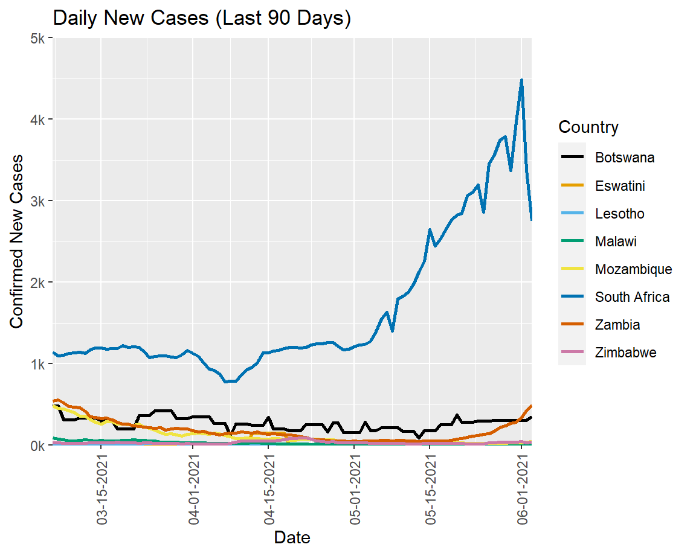
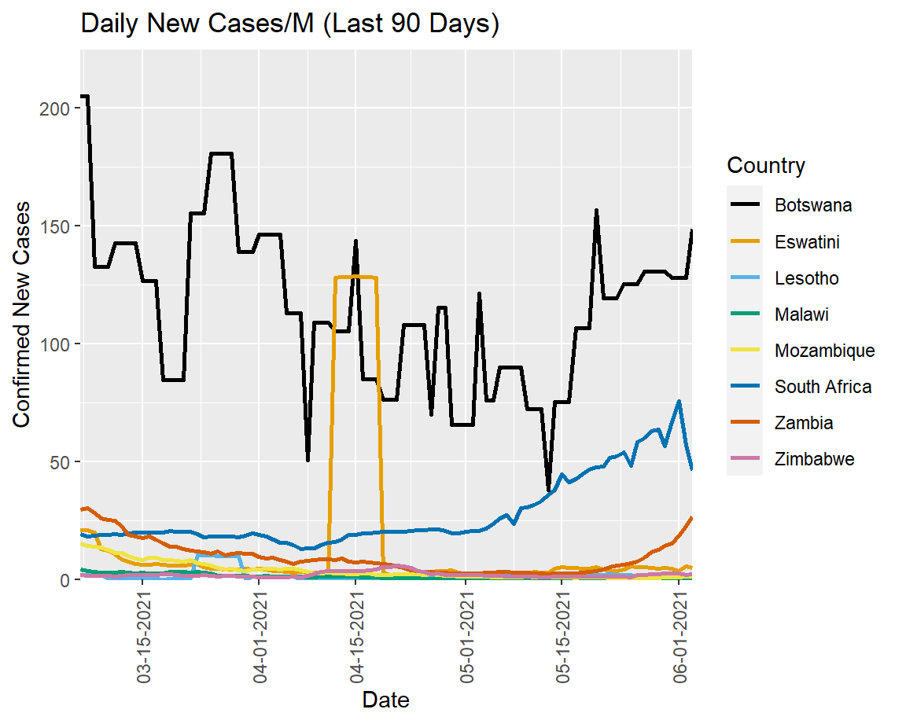
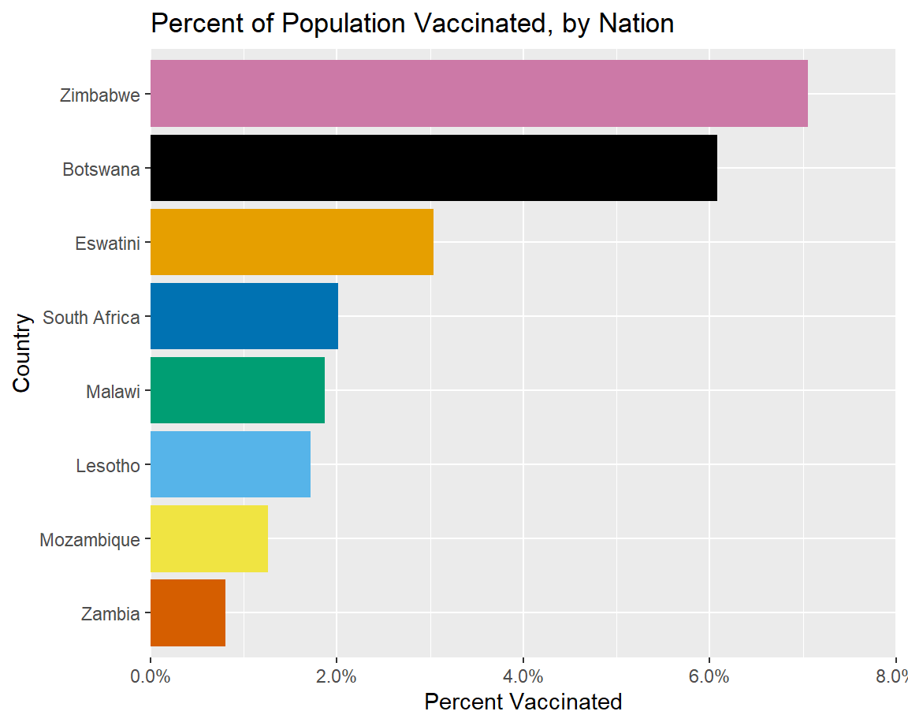
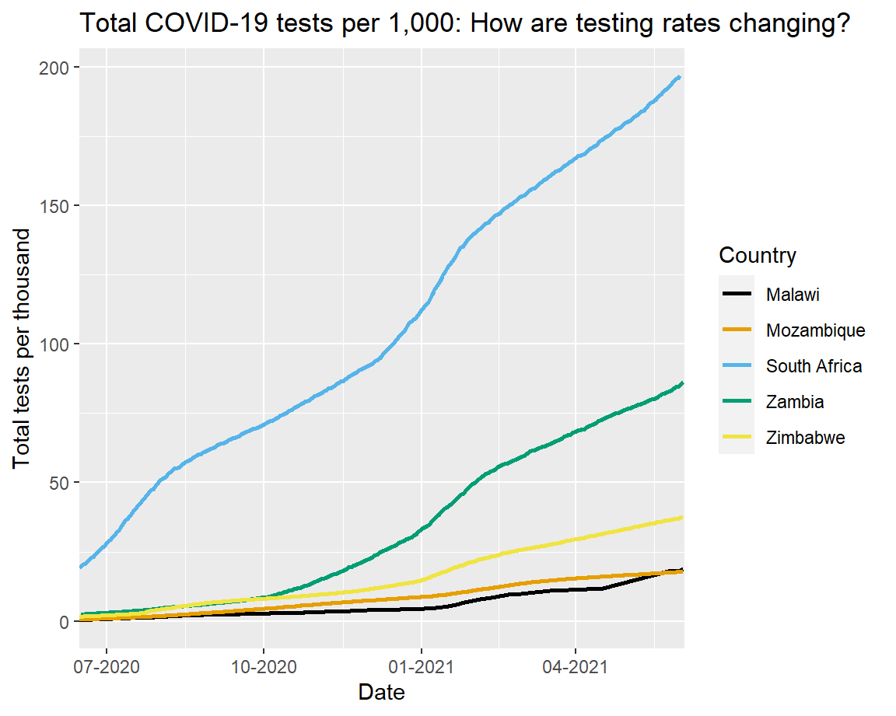
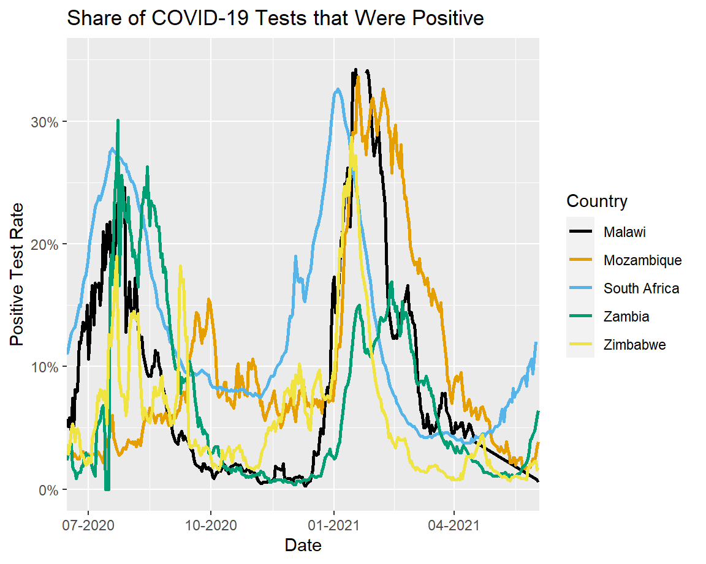

South Africa’s new cases have fallen this week, but have generally been rising. South Africa, Zambia, and Botswana are at risk of a third wave, with cases creeping up recently. Positive test rates have been rising in South Africa, Zambia, and Mozambique. South Africa’s rising test positivity, coupled with falling numbers of new cases, could indicate better targeted testing of people who are actually showing symptoms.
| Country | New Cases | New Cases /1M Pop |
|---|---|---|
| Botswana | 24291 | 10329 |
| South Africa | 148386 | 2502 |
| Eswatini | 1527 | 1316 |
| Zambia | 15979 | 869 |
| Mozambique | 10714 | 343 |
| Zimbabwe | 2831 | 190 |
| Lesotho | 324 | 151 |
| Malawi | 2243 | 117 |




